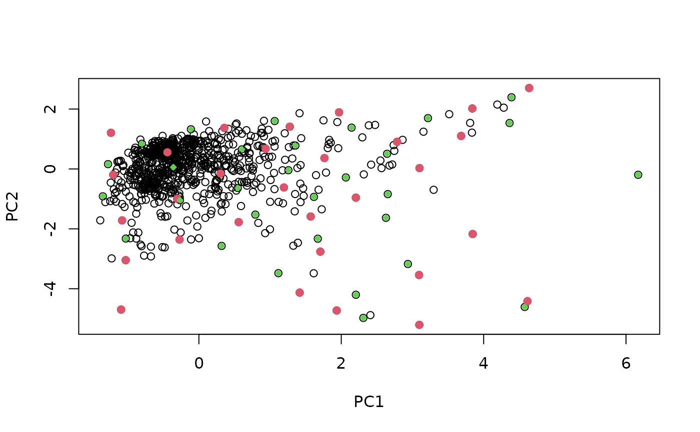
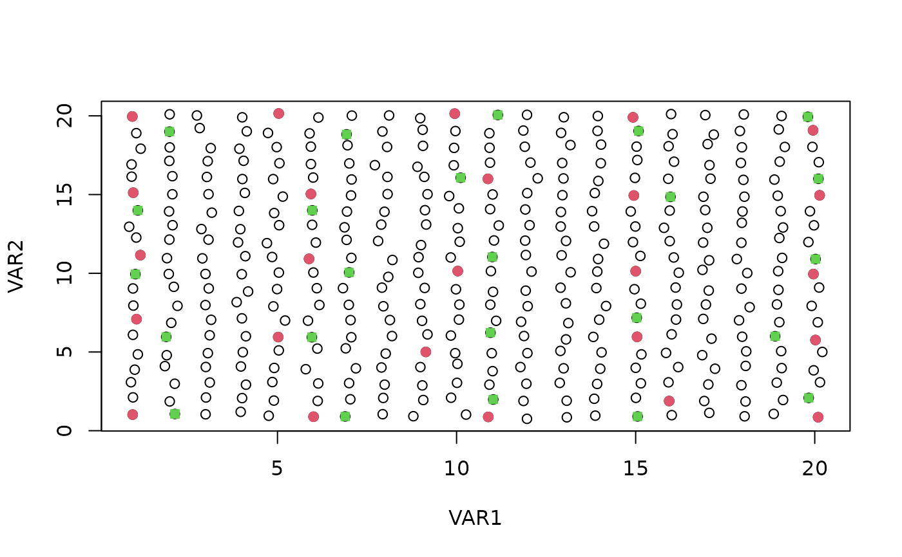

Select calibration samples from a large multivariate data using the DUPLEX algorithm
duplex(X,
k,
metric = c("mahal", "euclid"),
pc,
group,
.center = TRUE,
.scale = FALSE)a numeric matrix.
the number of calibration/validation samples.
the distance metric to be used: 'euclid' (Euclidean distance) or 'mahal' (Mahalanobis distance, default).
optional. The number of Principal Components to be used to select
the samples. If not specified, distance are computed in the Euclidean space.
Alternatively, distances are computed in the principal component space and
pc is the number of principal components retained.
If pc < 1, the number of principal components kept corresponds to the
number
of components explaining at least (pc * 100) percent of the total variance.
An optional factor (or vector that can be coerced to a factor
by as.factor) of length equal to nrow(X), giving the identifier
of related observations (e.g. samples of the same batch of measurements,
samples of the same origin, or of the same soil profile). When one
observation is
selected by the procedure all observations of the same group are removed
together and assigned to the calibration/validation sets. This allows to
select calibration and validation samples that are independent from each
other.
logical value indicating whether the input matrix must be
centered before projecting X onto the Principal Component space.
Analysis. Default set to TRUE.
logical value indicating whether the input matrix must be
scaled before X onto the Principal Component space.
Analysis. Default set to FALSE.
a list with components:
'model': numeric vector giving the row indices of the input data
selected for calibration
'test': numeric vector giving the row indices of the input data
selected for validation
'pc': if the pc argument is specified, a numeric matrix of the
scaled pc scores
The DUPLEX algorithm is similar to the Kennard-Stone algorithm (see
kenStone) but allows to select both calibration and validation
points that are independent. Similarly to the Kennard-Stone algorithm,
it starts by selecting the pair of points that are the farthest apart. They
are assigned to the calibration sets and removed from the list of points.
Then, the next pair of points which are farthest apart are assigned to the
validation sets and removed from the list. In a third step, the procedure
assigns each remaining point alternatively to the calibration
and validation sets based on the distance to the points already selected.
Similarly to the Kennard-Stone algorithm, the default distance metric used
by the procedure is the Euclidean distance, but the Mahalanobis distance can
be used as well using the pc argument (see kenStone).
Kennard, R.W., and Stone, L.A., 1969. Computer aided design of experiments. Technometrics 11, 137-148.
Snee, R.D., 1977. Validation of regression models: methods and examples. Technometrics 19, 415-428.
data(NIRsoil)
sel <- duplex(NIRsoil$spc, k = 30, metric = "mahal", pc = .99)
plot(sel$pc[, 1:2], xlab = "PC1", ylab = "PC2")
points(sel$pc[sel$model, 1:2], pch = 19, col = 2) # points selected for calibration
points(sel$pc[sel$test, 1:2], pch = 18, col = 3) # points selected for validation

# Test on artificial data
X <- expand.grid(1:20, 1:20) + rnorm(1e5, 0, .1)
plot(X[, 1], X[, 2], xlab = "VAR1", ylab = "VAR2")
sel <- duplex(X, k = 25, metric = "mahal")
points(X[sel$model, ], pch = 19, col = 2) # points selected for calibration
points(X[sel$test, ], pch = 15, col = 3) # points selected for validation
